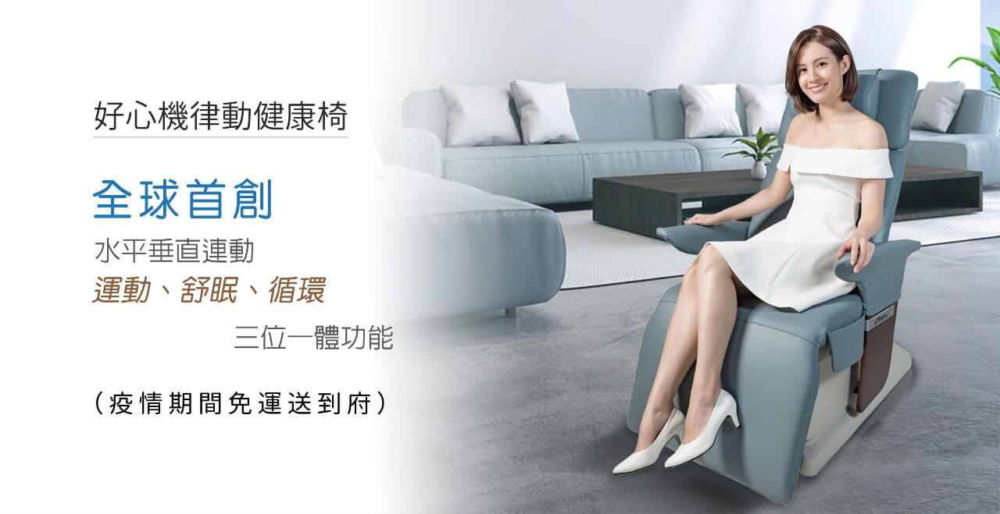
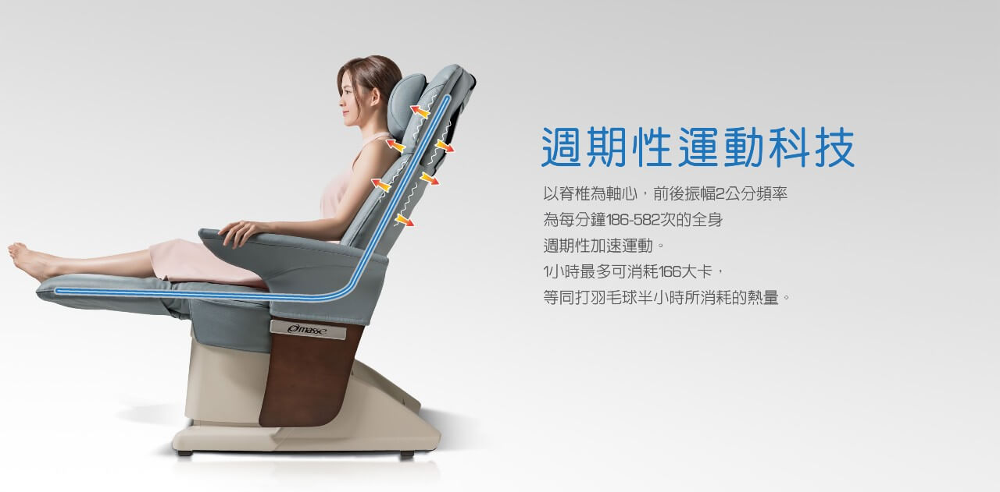
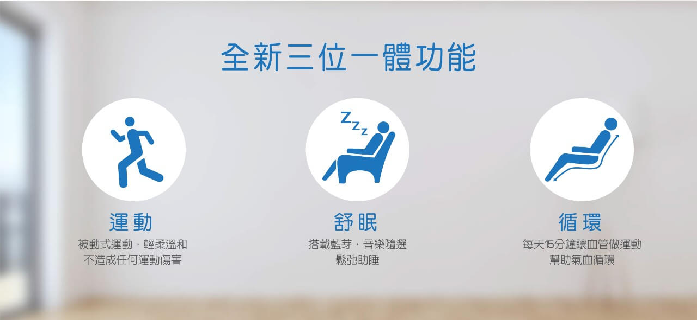
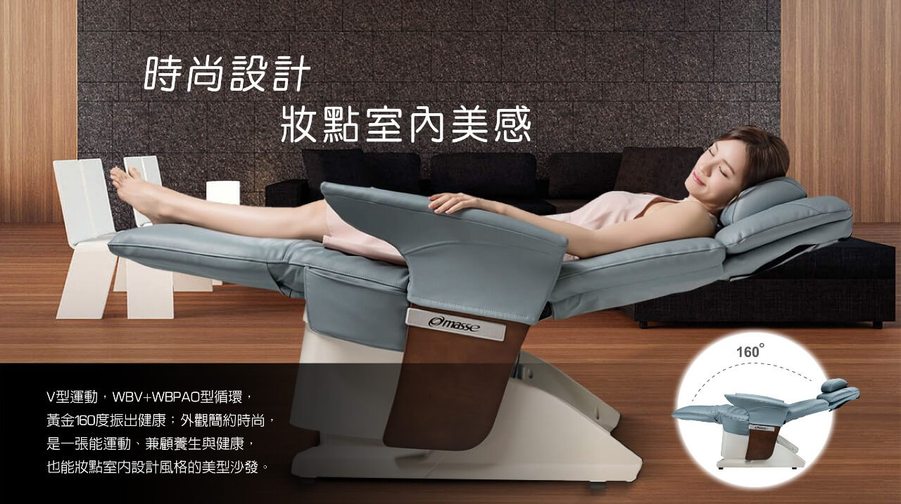
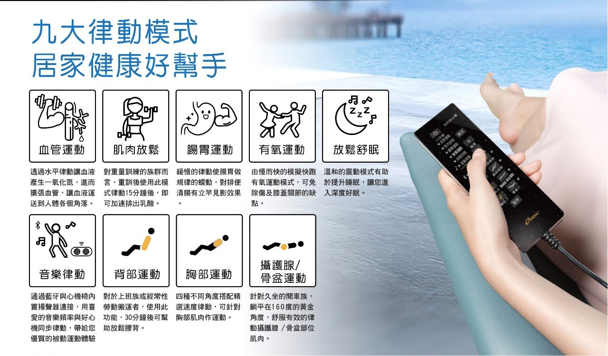
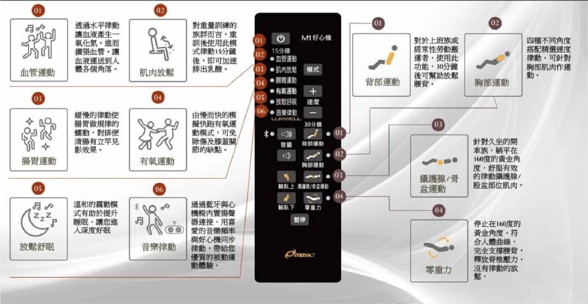
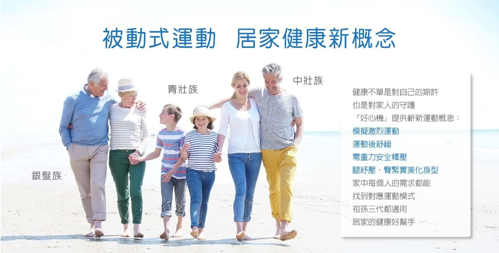
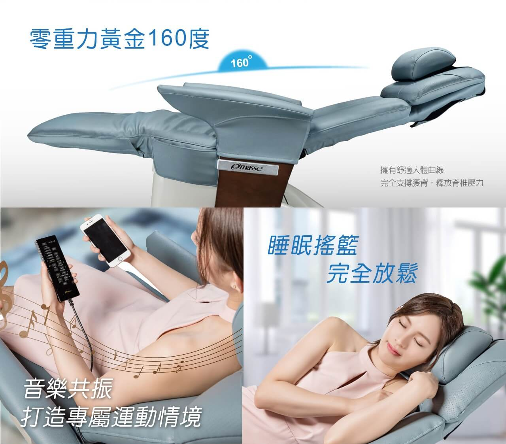
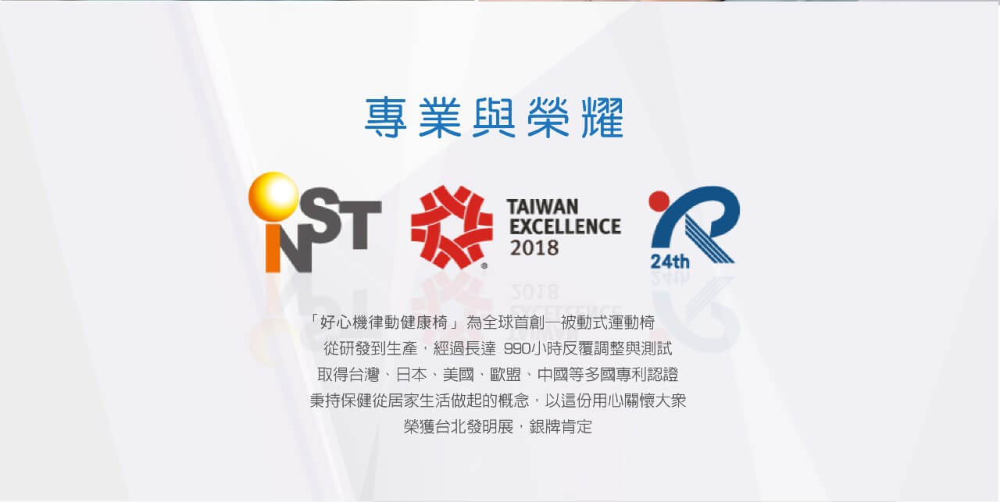
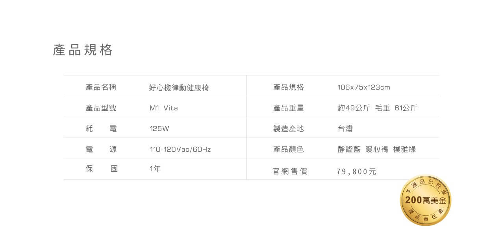

好心機律動健康椅 M1 Vita
- 全球首創運動、舒眠、循環效果，一台滿足
- 被動式全身律動，一小時最多可消耗166大卡！
- 好心機健康律動椅，讓你健康不用費心機！










建議售價：79800元
聯絡我們
商品描述
銀髮族上了年紀、上班族繁忙沒時間，長期缺乏運動，體力越來越差，有沒有輕鬆方便的達到養生健康的方式呢？好心機健康律動椅，讓你健康不用費心機！全球首創運動、舒眠、循環三位一體功能，模擬激烈運動、運動後舒緩、零重力狀態，乃至於腿舒壓、臀緊緻等六種模式，讓家中的每一位成員都能找到對應需要的模式，是居家健康的好幫手。
全身律動是一種溫和且不會造成任何運動傷害的方式，係以脊椎為軸心做前後振幅2公分，頻率為每分鐘186~582次的全身週期性加速運動，一小時最多可消耗166大卡(註一)(打羽毛球半小時熱量(註二))，可依個人身體狀況調節不同速度，有效達到被動式運動、舒眠、循環等三位一體功能。
※ 註一：數據資料來自於中正大學王順正教授Vita好心機的能量研究報告。
※ 註二：數據資料來自於衛生福利部國民健康署 肥胖防治網。
- 疫情期間免運、含一年保固
- 全球首創 水平垂直運動
- 運動、舒眠、循環 三位一體功能
- 9大律動模式居家健康好幫手
- 擁有舒適人體曲線，完全支撐您的腰背，釋放脊椎壓力超放鬆
- 枕頭兩側內建隱藏式喇叭，內建3首律動音樂
- 藍牙連結您選定音樂，利用音樂節奏連動椅子律動，打造個人專屬運動或舒緩情境。
- 精品設計，台灣、日本、歐盟、中國等多國專利
- 獲台灣精品獎、發明獎肯定
專利證號：I598133、I572396
【注意事項】
消費者使用前應詳閱產品說明書
配送地區僅限台灣本島
商品內容
- 好心機律動健康椅1台
商品規格
| 品名 | 好心機律動健康椅 |
| 型號 | M1 Vita |
| 尺寸 | 106x75x123CM (離牆預留70cm) |
| 重量 | 約49Kg (毛重61Kg) |
| 耗電 | 120W |
| 電源 | 110-220 ac/60Hz |
| 時間 | 約 10~30分鐘(MAX) |
| 顏色 | 靜謐藍 樸雅綠 |
| 保固 | 1年(本產品已投保200萬美金產品責任險) |
| 產地 | 台灣 |